| Nombre | Posición | Edad | Bibliografía | Portada |
|---|---|---|---|---|
| Payam Niazmand | Portero | 30 |
Payam Niazmand es el portero titular de Irán, conocido por sus reflejos y seguridad bajo los tres palos. Ha defendido los colores del Persepolis con destacadas actuaciones en torneos nacionales e internacionales. |
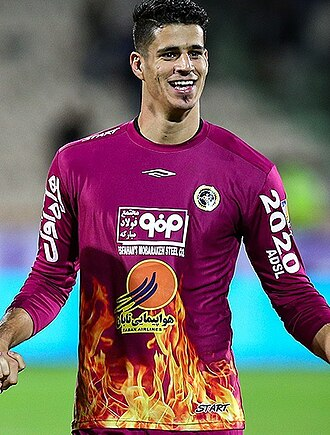 |
| Alireza Jahanbakhsh | Extremo derecho | 30 |
Alireza Jahanbakhsh es un extremo hábil y veloz, conocido por sus goles y asistencias. Ha jugado en el SC Heerenveen y ha sido pieza clave en la ofensiva de Irán. |
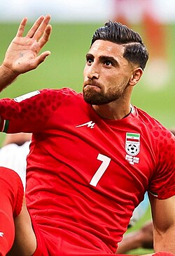 |
| Mehdi Taremi | Delantero | 30 |
Mehdi Taremi es el delantero estrella de la selección iraní. Reconocido por su precisión y olfato goleador, juega actualmente en el Inter de Milán, aportando goles y experiencia. |
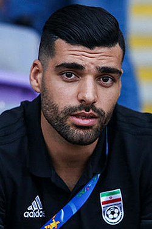 |
| Sardar Azmoun | Delantero | 29 |
Sardar Azmoun es conocido como el "Messi iraní" por su técnica y capacidad goleadora. Ha jugado en Shabab Al-Ahli y es un referente ofensivo de la selección. |
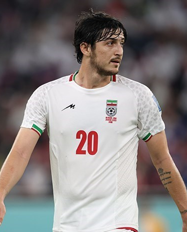 |
| Ali Gholizadeh | Extremo izquierdo | 28 |
Ali Gholizadeh es un extremo creativo y veloz, capaz de asistir y marcar goles. Juega en el Lech Poznań y aporta equilibrio en ataque para Irán. |
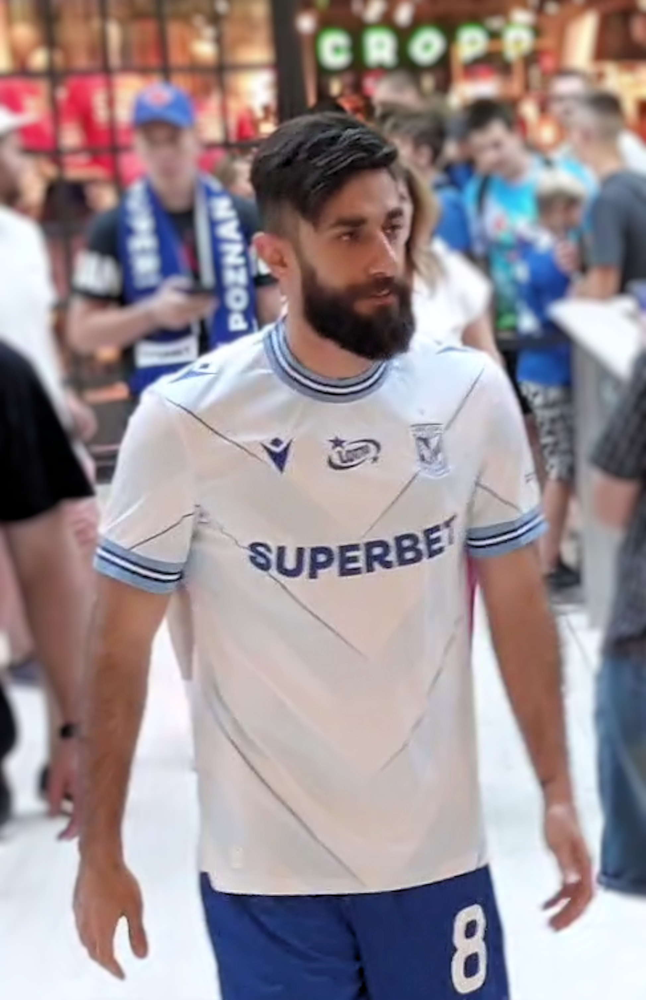 |
| Rouzbeh Cheshmi | Centrocampista | 30 |
Rouzbeh Cheshmi es un mediocampista con gran capacidad defensiva y liderazgo en el campo. Juega en el Esteghlal FC y aporta solidez al mediocampo iraní. |
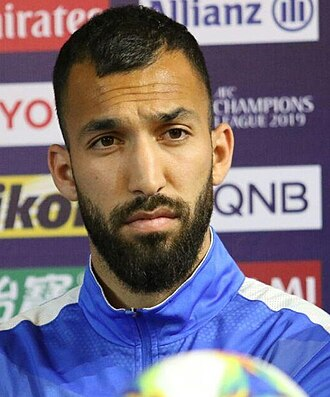 |
| Saman Ghoddos | Centrocampista | 29 |
Saman Ghoddos es un mediocampista ofensivo con buena técnica y visión de juego. Juega en Brentford y es clave para la creación de juego de Irán. |
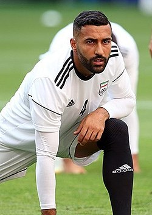 |
| Milad Mohammadi | Lateral izquierdo | 29 |
Milad Mohammadi es lateral izquierdo con gran velocidad y resistencia. Ha jugado en Persepolis y se destaca por su capacidad de ataque y defensa. |
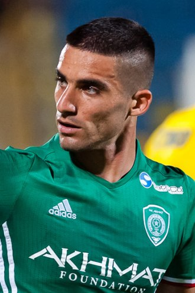 |
| Omid Noorafkan | Centrocampista/Defensa | 28 |
Omid Noorafkan es un jugador versátil que puede desempeñarse como defensor o mediocampista. Actualmente juega en Sepahan y aporta dinamismo al equipo. |
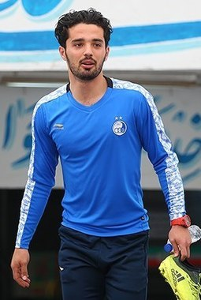 |
| Ramin Rezaeian | Lateral derecho | 32 |
Ramin Rezaeian es lateral derecho con buena capacidad defensiva y proyección ofensiva. Juega en Esteghlal FC y aporta experiencia y estabilidad. |
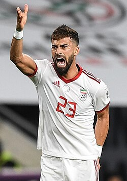 |
| Shahriyar Moghanlou | Delantero | 28 |
Shahriyar Moghanlou es delantero potente y hábil. Juega en Al-Ittihad Kalba y aporta goles y movilidad a la ofensiva de Irán. |
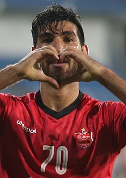 |
| Ali Alipour | Delantero | 29 |
Ali Alipour es un delantero con gran capacidad de definición. Juega en Persepolis y se destaca por su instinto goleador. |
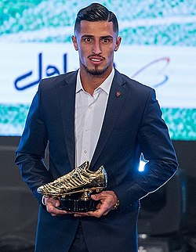 |